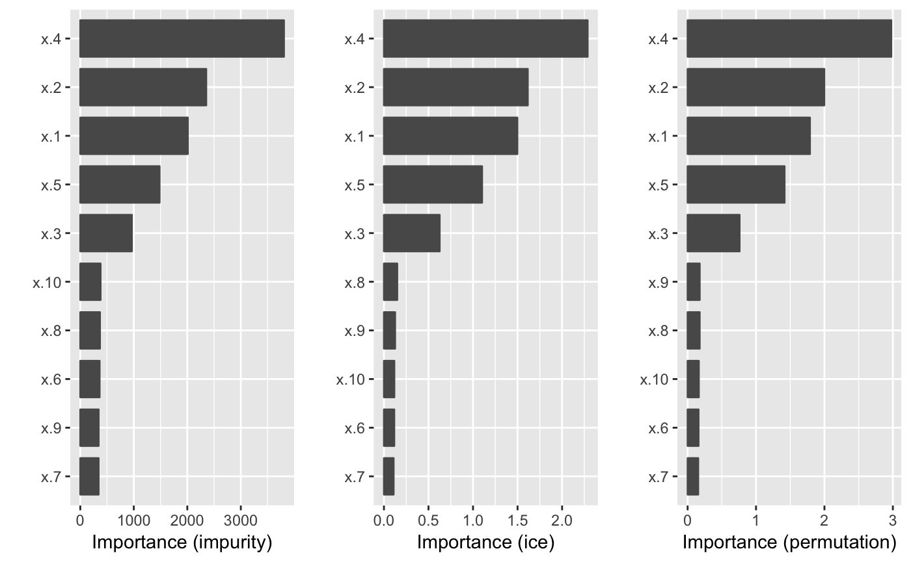

Overview
In the era of “big data”, it is becoming more of a challenge to not only build state-of-the-art predictive models, but also gain an understanding of what’s really going on in the data. For example, it is often of interest to know which, if any, of the predictors in a fitted model are relatively influential on the predicted outcome. Some modern algorithms—like random forests and gradient boosted decision trees—have a natural way of quantifying the importance or relative influence of each feature. Other algorithms—like naive Bayes classifiers and support vector machines—are not capable of doing so and model-free approaches are generally used to measure each predictor’s importance.
Enter vip, an R package for constructing variable importance (VI) scores/plots for many types of supervised learning algorithms using one of the following approaches:
Model-based VI scores (when available). For example, in a random forest, variable importance can be computed using the permutation approach described in Breiman (2001). Other supervised learning algorithms (like MARS and GBMs) have their own ways of constructing VI scores.
PDP-based VI scores. This is a new idea described in Greenwell et al. (2018). The idea is to measure the “flatness” of Friedman’s partial dependence plot (PDP) for each feature. A feature whose PDP is flat, relative to the other features, implies that the feature has less of an influence on the estimated prediction surface as it changes while taking into account the average effect of the other features in the model.
ICE-based VI scores. This method is similar to the PDP-based VI scores above, but are based on measuring the “flatness” of the individual conditional expectation (ICE) curves presented by Goldstein et al. (2014).
Since PDPs and ICE curves can be constructed for any supervised learning algorithm, this means we can use methods 2) and 3) to construct VI scores for any supervised learning algorithm while taking into account the model and all of the features.
Installation
The vip package is currently only available from GitHub, but can easily be installed using the devtools package:
Example usage
For illustration, we use one of the regression problems described in Friedman (1991) and Breiman (1996). These data are available in the mlbench package. The inputs consist of 10 independent variables uniformly distributed on the interval \(\left[0, 1\right]\); however, only 5 out of these 10 are actually used in the true model. Outputs are created according to the formula described in ?mlbench::mlbench.friedman1. The code chunk below simulates 500 observations from the model default standard deviation.
# Simulate training data
set.seed(101) # for reproducibility
trn <- as.data.frame(mlbench::mlbench.friedman1(500)) # ?mlbench.friedman1Next, we fit a random forest to the simulated data and construct variable importance plots using the two methods provided by the random forest algorithm (left and middle plots) and the (experimental) partial dependence-based approach (right plot). In this case, all three methods do a fantastic job at highlighting the five variables used in the true model.
# Load required packages
library(ggplot2) # for ggtitle()
library(randomForest)
library(vip)
# Fit a random forest
set.seed(102)
rf <- randomForest(y ~ ., data = trn, importance = TRUE)
# Use `vi()` to return a tibble of variable importance scores
vi(rf, type = 1)
#> # A tibble: 10 x 2
#> Variable Importance
#> <chr> <dbl>
#> 1 x.4 76.8
#> 2 x.2 62.9
#> 3 x.1 53.8
#> 4 x.5 37.6
#> 5 x.3 22.9
#> 6 x.9 1.18
#> 7 x.8 1.02
#> 8 x.7 -0.0363
#> 9 x.10 -0.457
#> 10 x.6 -1.65
# Use `vip()` to construct ggplot2-based variable importance plots
p1 <- vip(rf, type = 1) + ggtitle("RF: accuracy")
p2 <- vip(rf, type = 2) + ggtitle("RF: impurity")
p3 <- vip(rf, method = "ice") + ggtitle("ICE")
#> Warning: Setting `method = "ice"` is experimental, use at your own risk!
grid.arrange(p1, p2, p3, ncol = 3)
References
Breiman, L. “Random Forests”. Machine Learning. 45(1): 5-32, 2001. URL https://doi.org/10.1023/A:1010933404324.
Friedman, J. H. “Greedy function approximation: A gradient boosting machine”. The Annals of Statistics, 29: 1189–1232, 2001. URL https://doi.org/10.1214/aos/1013203451
Greenwell, B. M., Boehmke, B. C., and McCarthy, A. J. “A Simple and Effective Model-Based Variable Importance Measure”. arXiv preprint, 2018. URL https://arxiv.org/abs/1805.04755.
Goldstein, A., Kapelner, A., Bleich, J., and Pitkin, E. (2015) “Peeking inside the black box: Visualizing statistical learning with plots of individual conditional expectation”. Journal of Computational and Graphical Statistics, 24*(1): 44-65, 2015. URL https://doi.org/10.1080/10618600.2014.907095.